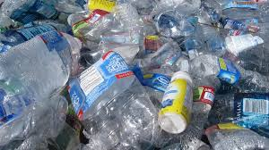
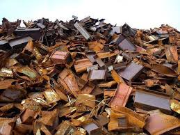

| 1 |
Plastik |
 |
Plastik dibuat dari bahan kimia yang diolah secara industri seperti polimer. Karena plastik adalah bahan sintetis yang tidak berasal dari bahan alami dan tidak dapat terurai oleh mikroorganisme secara alami. |
Rp 20.000 |
| 2 |
Kaca |
 |
Kaca terbuat dari bahan anorganik seperti pasir silika (silicon dioxide), soda (natrium karbonat), dan kapur (kalsium karbonat), yang semuanya adalah bahan mineral dan tidak berasal dari makhluk hidup. |
Rp 20.000 |
| 3 |
Besi |
 |
Besi adalah logam yang diperoleh dari bijih besi yang terdapat di dalam tanah, yang merupakan bahan mineral.Jadi tidak dapat terurai secara biologis, meskipun dapat mengalami korosi (karat). |
Rp 20.000 |